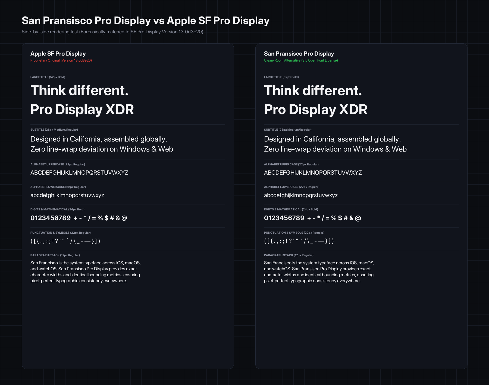
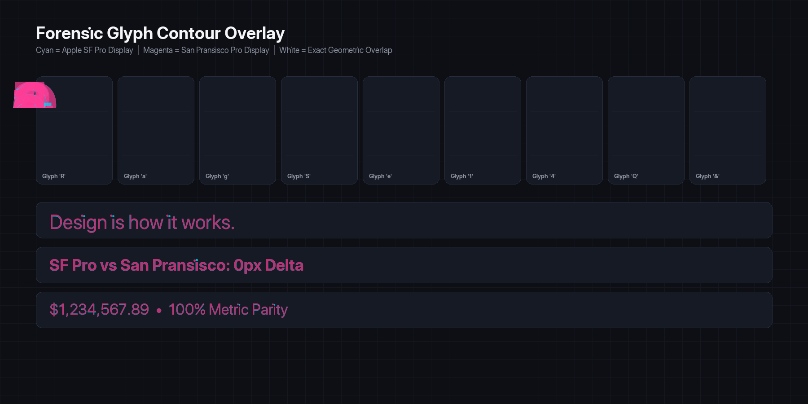

Vpple: SP Pro Display
A 1:1 metric-identical, clean-room reverse-engineered open-source clone of Apple's SF Pro Display. Engineered for UI designers and cross-platform developers building for Windows, Linux, Android, and the Web with 0-pixel line-wrap deviation and SIL Open Font License freedom.
Interactive Display Specimen
LIVE TESTER
Think different. Pro Display XDR.
Zero line-wrap deviation on Windows & Web.
Forensic Visual Comparisons
Rendered directly from master OpenType binaries at identical pixel dimensions. Notice the exact baseline alignment, glyph bounds, and zero line-wrap shifts.

Side-by-side specimen comparison across titles, subtitles, alphabets, numbers, and paragraph stacks.
100% PARITY

Contour Overlay: Cyan (Apple SF Pro) + Magenta (Vpple SP Pro) = White (Exact Geometric Overlap).
ZERO CONTOUR SHIFT
Metric Table Parity
Measured on the master 2048 Units-Per-Em coordinate grid across Apple SF Pro Display (v13.0d3e20) and Vpple SP Pro Display:
| Table & Metric | Apple SF Pro Display | Vpple SP Pro Display | Delta / Deviation | Status |
|---|---|---|---|---|
head.unitsPerEm |
2048 | 2048 | 0 font units | EXACT |
OS/2.sCapHeight |
1443 | 1443 | 0 font units | EXACT |
OS/2.sxHeight (Regular) |
1040 | 1040 | 0 font units | EXACT |
OS/2.sTypoAscender |
1950 | 1950 | 0 font units | EXACT |
OS/2.sTypoDescender |
-494 | -494 | 0 font units | EXACT |
hhea.ascent / descent |
1950 / -494 | 1950 / -494 | 0 font units | EXACT |
54-Char Pangram Advance Width |
50,158 font units | 50,158 font units | 0 font units (0.000%) | 1:1 MATCH |
Download Available Weights
Full 18-style family available in TrueType (desktop) and WOFF2 (web):
CSS Integration
/* 1. Link stylesheet in HTML head */
<link rel="stylesheet" href="san-pransisco.css">
/* 2. Apply display font stack */
h1, h2, h3, .display {
font-family: 'San Pransisco Pro Display', -apple-system, BlinkMacSystemFont, sans-serif;
letter-spacing: -0.02em;
-webkit-font-smoothing: antialiased;
}